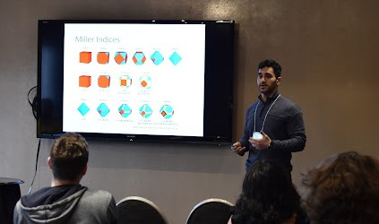
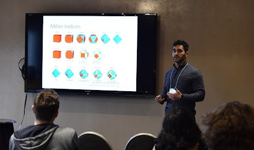

Backend-Developer
I programmed a simulation in C to visualize a surface and two different datasets. I then mapped one dataset acquired by Atomic Force Microscopy (AFM) onto another dataset acquired by Electron Backscatter Diffraction (EBSD) by finding mapping variables. The quality of the mapping was measure using an objective function developed by me. Then conducted an optimization study, replacing the Downhill Simplex method with Simulated Annealing and Particle Swarm algorithms using C, resulting in a more efficient investigation of the search space. I automated the output of data Using Java and Bash and visualized it in R to present to supervisors. I presented my work at the Canadian Undergraduate Physics Conference 2023 held at Waterloo University to Professors and peers, improving my public speaking skills.
Frontend-Developer
I created a graphic user interface in Java using the AWT package, named JCube, for the processing of data given to us by Atotech in Germany. I then conducted a statistical study on the outputs of JCube using Python and visualized the data for presentation. Following my work, we published a paper with the title:“Facet type determination based on combined atomic force microscopy and electron backscatter diffraction”. I presented the paper at the Atlantic Undergraduate Physics and Astronomy Conference 2023 held at Saint Mary’s University to Professors and peers, improving my public speaking skills.
Read PaperTeaching Assistant
I have worked as a teacher's assistant for four years at Mount Allison University and Dalhousie University. I answered student questions, helping them understand the material, and marking their assignments and labs. This experience advanced my communication and social skills with teaching abstract mathematical ideas. It honed my presentation and leadership skills by designing and leading labs. I was Awarded the ”TA of Year” award and Certificate for ”Teaching Assistant Excellence”. I have been the teacher's assistant in Calculus II, Applied Calculus, Discrete Structures, Linear Algebra, Digital Signal Processing, General Physics II and Data Structures and algorithms.
Website Developer
I did volunteer work for a friend's business name "CultureConnect". I created a website for them using JavaScript and Wix. Recieved the Future New Brunswick grant for my work. You can view the website here:
See Website 
